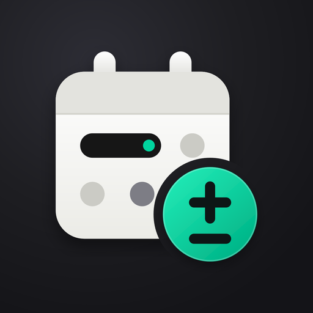

Date Calculator: Days & Age
Exact calendar math, workdays, countdowns & widgets
Your dates stay on your phone. Date Calculator has no account, no ads, no analytics, and no backend server of its own. All of your calculations, saved dates, custom holidays, work week settings, pinned world clock cities, and appearance preferences are stored locally on your device.
1. What stays on your device
Everything you enter in Date Calculator—date calculations, saved bookmarks, My Dates countdowns, reminder times, custom work weeks, holidays, pinned World Clock cities, and theme/palette settings—is stored exclusively in private local storage on your Android device (and local Android SharedPreferences for home screen widgets). The developer has no access to this data.
2. Permissions and what they are used for
- Notifications (optional): requested only if you enable a reminder for a saved date in My Dates. Reminders are scheduled locally on your device.
- Google Play Billing: enables the optional one-time Lifetime Pro purchase, purchase restoration, and Google Play promo code redemption.
- Vibration: provides optional haptic feedback on controls (can be turned off in Settings).
3. Third-party services
- Google Play & RevenueCat: handle the optional one-time Lifetime Pro purchase, restores, and anonymous entitlement verification. RevenueCat assigns a random anonymous App User ID and processes purchase history and basic app/device metadata under the Google Privacy Policy and the RevenueCat Privacy Policy. Payment details are processed solely by Google Play; the developer never sees your card or billing details.
- Open-Meteo Geocoding API (optional, World Clock search only): when you actively search for a city name in World Clock, the app sends your search text and selected app language to
geocoding-api.open-meteo.comto return matching cities and IANA time zones (see Open-Meteo Terms). No account or personal identifier is sent. Once pinned, cities run completely offline, and offline searches fall back to your device's built-in time zone database.
Date Calculator contains zero ads, does not use the Android Advertising ID (AAID), and does not track you across other apps or websites.
4. Data sharing
We do not sell, rent, or share your personal data with advertisers or data brokers. Data is transmitted only to the service providers listed in section 3 to fulfill billing/entitlements or World Clock city search requests you initiate.
5. Deleting your data
To delete all local calculations, saved dates, holidays, cities, and settings on your device, clear the app's storage in Android Settings or uninstall the app.
To request deletion of purchase and anonymous app user records stored by RevenueCat, email rabpaulodev@gmail.com with the subject "Date Calculator data deletion" and your Google Play order number (GPA.…). Records are deleted within 30 days. Google maintains payment records under the Google Privacy Policy.
6. Children
Date Calculator is not directed at children under 13 and does not knowingly collect personal information from children.
7. Changes to this policy
If this policy is updated, the revised version will be published on this page with an updated date.
8. Contact
Questions or requests: rabpaulodev@gmail.com, or open an issue in the privacy policy repository.
Calculadora de Datas e Idade
Suas datas ficam no seu celular. A Calculadora de Datas não tem conta, anúncios nem analytics e não possui servidor próprio. Todos os seus cálculos, datas salvas, feriados, semana útil, cidades do Relógio Mundial e preferências de tema ficam salvos localmente no seu aparelho.
1. O que fica no seu aparelho
Tudo o que você cadastra no app — cálculos de datas, cálculos salvos, Minhas Datas, lembretes, semana útil, feriados, cidades fixadas no Relógio Mundial e configurações de aparência — é armazenado exclusivamente no armazenamento local privado do Android (e em SharedPreferences locais para os widgets da tela inicial). O desenvolvedor não tem acesso a esses dados.
2. Permissões e para que são usadas
- Notificações (opcional): solicitada apenas quando você ativa um lembrete em Minhas Datas. Os lembretes são agendados localmente no aparelho.
- Faturamento do Google Play: permite a compra única opcional do Pro Vitalício, restauração de compras e resgate de códigos promocionais.
- Vibração: oferece feedback tátil opcional nos controles (pode ser desativado em Configurações).
3. Serviços de terceiros
- Google Play e RevenueCat: processam e confirmam a compra única opcional do Pro Vitalício, restaurações e verificação anônima de acesso. A RevenueCat gera um identificador anônimo de usuário do app e processa histórico de compra e metadados básicos do aparelho conforme as políticas do Google e da RevenueCat. Os dados de pagamento são tratados apenas pelo Google Play.
- API de Geocodificação Open-Meteo (opcional, apenas na busca do Relógio Mundial): quando você busca o nome de uma cidade no Relógio Mundial, o app envia o texto digitado e o idioma do app para
geocoding-api.open-meteo.compara retornar cidades e fusos IANA (Termos do Open-Meteo). Nenhum dado pessoal é enviado. Depois de adicionadas, as cidades funcionam totalmente offline.
O app não exibe anúncios, não usa o ID de publicidade do Android (AAID) e não rastreia você em outros apps ou sites.
4. Compartilhamento
Não vendemos nem alugamos dados pessoais. As únicas comunicações externas são as descritas na seção 3.
5. Exclusão dos dados
Para apagar todos os dados locais, limpe o armazenamento do app nas Configurações do Android ou desinstale o aplicativo. Para solicitar a exclusão de registros anônimos de compra armazenados na RevenueCat, envie um email para rabpaulodev@gmail.com informando o número do pedido do Google Play (GPA.…); a exclusão ocorre em até 30 dias.
6. Crianças
O app não é direcionado a menores de 13 anos e não coleta intencionalmente dados pessoais de crianças.
7. Alterações
Eventuais atualizações desta política serão publicadas nesta página com a nova data.
8. Contato
Dúvidas ou solicitações: rabpaulodev@gmail.com ou abra uma issue no repositório da política de privacidade.
Calculadora de Fechas y Edad
Tus fechas permanecen en tu dispositivo. Calculadora de Fechas no tiene cuentas, anuncios ni analítica, y no utiliza servidor propio. Todos tus cálculos, fechas guardadas, feriados, semana laboral, ciudades del Reloj Mundial y ajustes de tema se guardan localmente en tu teléfono.
1. Qué permanece en tu dispositivo
Toda la información que ingresas —cálculos de fechas, elementos guardados, Mis Fechas, recordatorios, semana laboral, feriados, ciudades fijadas en el Reloj Mundial y preferencias de apariencia— se guarda únicamente en el almacenamiento local privado de Android (y en SharedPreferences locales para los widgets). El desarrollador no tiene acceso a estos datos.
2. Permisos y su finalidad
- Notificaciones (opcional): se solicita solo si activas un recordatorio en Mis Fechas. Los recordatorios se programan localmente en tu dispositivo.
- Facturación de Google Play: habilita la compra única opcional de Pro Vitalicio, la restauración de compras y el canje de códigos promocionales.
- Vibración: ofrece respuesta háptica opcional en los controles (se puede desactivar en Ajustes).
3. Servicios de terceros
- Google Play y RevenueCat: gestionan la compra única opcional de Pro Vitalicio, restauraciones y verificación anónima de acceso, según las políticas de Google y RevenueCat. Los datos de pago son procesados exclusivamente por Google Play.
- API de Geocodificación Open-Meteo (opcional, solo búsqueda del Reloj Mundial): cuando buscas una ciudad en Reloj Mundial, la app envía el texto buscado y el idioma de la app a
geocoding-api.open-meteo.compara obtener ciudades y zonas horarias IANA (Términos de Open-Meteo). Una vez agregadas, las ciudades funcionan sin conexión.
La app no muestra anuncios, no utiliza el ID de publicidad de Android (AAID) y no realiza seguimiento en otras apps ni sitios web.
4. Eliminación de datos y contacto
Para eliminar los datos locales, borra el almacenamiento de la app en los Ajustes de Android o desinstálala. Para solicitar la eliminación de registros anónimos en RevenueCat, escribe a rabpaulodev@gmail.com con tu número de pedido de Google Play (GPA.…), o abre un issue en el repositorio de privacidad.